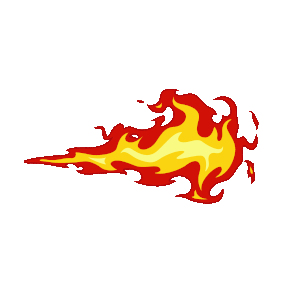

2024
八眼巨蛛 (Acromantula)是一种体型巨大的蜘蛛，生长在亚洲东南部的雨林深处， 特别是加里曼丹岛茂密的丛林深处。八眼巨蛛被认为是巫师培育出来的物种，守护巫师的居所或财宝。 这种巨型蜘蛛生性残忍，喜食人肉。 八眼巨蛛在1965年《禁止动物培育实验法》出台之前就已经存在：早在1794年，就已经有人目击到这种生物。
魔法生物大赏
八眼巨蛛 (Acromantula)是一种体型巨大的蜘蛛，生长在亚洲东南部的雨林深处， 特别是加里曼丹岛茂密的丛林深处。八眼巨蛛被认为是巫师培育出来的物种，守护巫师的居所或财宝。 这种巨型蜘蛛生性残忍，喜食人肉。 八眼巨蛛在1965年《禁止动物培育实验法》出台之前就已经存在：早在1794年，就已经有人目击到这种生物。
小精灵 (Pixie)是一种铁青色的小型生物，它们非常顽皮，喜欢耍弄各种各样的鬼把戏和恶作剧。 它们虽没翅膀但可飞行。小精灵喜欢揪住那些没有防备的人的耳朵，把他们提起来扔到树梢和屋顶上。这也表明小精灵尽管身材很小， 却有着很大的力气。小精灵能发出叽叽喳喳声向外界沟通，但只有其他小精灵才能明白它的意思。 这种生物能够保持年轻。
它非常大，几乎占满了从三楼禁区走廊到天花板的所有位置。满身都是灰颜色的， 长着三只大脑袋。目光凶恶可怕。谁要是经过这里， 它就会立即狂吠起来。并用他那满嘴的黄牙试图咬你，你也就无路可逃了。
诺伯，是一条挪威脊背龙， 是海格在哈利一年级的时候在酒馆里向别人赢来的， 后来因为它长得太大了而被罗恩在罗马尼亚研究龙的哥哥查理·韦斯莱收留，后来发现是母龙，改名为诺贝塔
曼德拉草叶片 (Mandrake leaf)是曼德拉草的叶子，可以作为魔药原料。 1995年，当哈利·波特寻找能帮助他完成三强争霸赛第二个项目的信息时， 他忙乱地在各种书籍中查找与“水”有关的内容。但他发现的内容通常都与在水下呼吸无关， 比如提到“水”和曼德拉草叶片的魔药制作指导。
嗅嗅是不列颠一种会掘地的动物。 这种动物全身覆盖着黑色绒毛，鼻吻较长， 对一切闪闪发光的东西都特别偏爱。妖怪们经常饲养泥伏雷来挖掘地下深处的财宝。 虽然泥伏雷性格温和，甚至对你温情脉脉，但它对你的财物会造成破坏，所以千万别养在家中。泥伏雷生活在自己的巢穴中，一般在地下二十英尺的地方，一窝产崽六至八只。
类蛇形魔法生物，身体翠绿，其实与毒蛇有着本质区别。一直以来，人们对蛇怪只有些凤毛麟角的记录。 传说它来自七岁的公鸡在天狼星当空时产下的魔蛋，并由癞蛤蟆将其孵化。它的视线是最危险的攻击武器： 任何与它目光直接相交的生物都将立即毙命（除了凤凰，因为凤凰不会死）， 间接相交（比如从镜子里看到）的生物将石化。只要食物充足，蛇怪通常可以活很久。
它披着一件斗篷，全身都像在水里泡烂了一样，有着结痂的手掌，全身腐烂了一样。 凡是此物经过的地方，都会被吸去快乐，让人想起最可怕的事，并且它的兜帽下面的“嘴”会吸去人们的灵魂， 被称为“摄魂怪的吻”。它们守卫着阿兹卡班巫师监狱（魔法世界的牢房）。 只有守护神咒才能将其驱逐。不清楚有没有将其消灭的方法